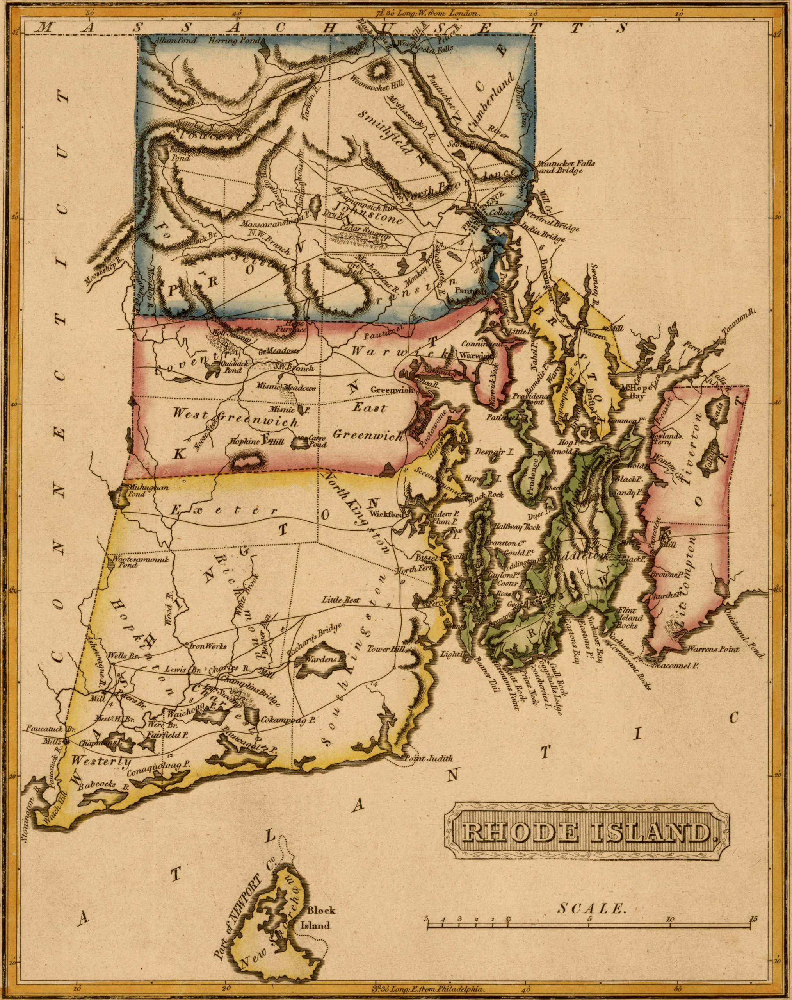
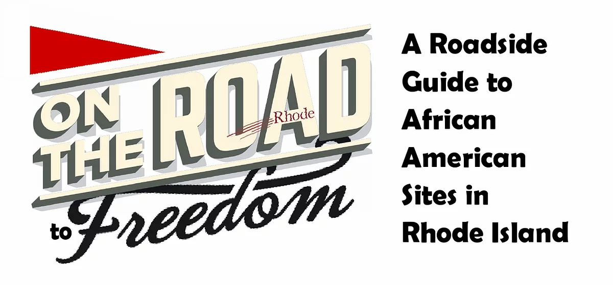
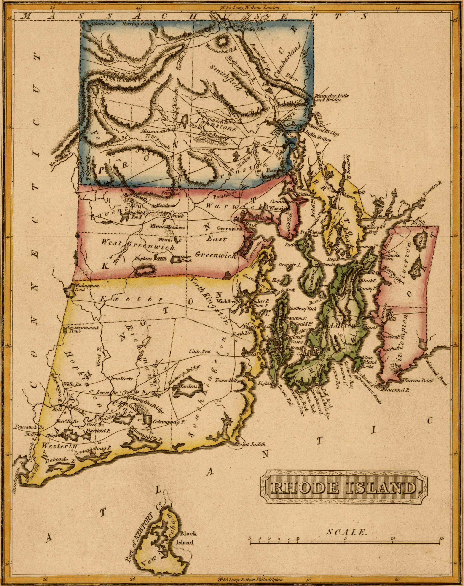
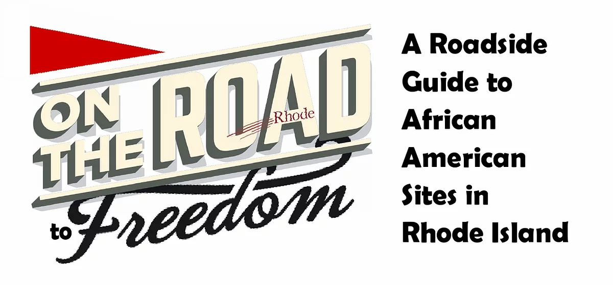

Snowtown Riot 1831 - Marker
North end of Roger Williams National Memorial, 282 North Main Street. Inscription: "The site of the second major riot between Providence African American residents and white workers."
Hardscrabble Riot 1824 - Marker
Median strip between North Main Street and Charles Street. Inscription: "The site of Addison Hollow where the first nineteenth century blacks purchased property and the site of the first major riot." White rioters caused the partial destruction of this community and brought about the institution of a police department.
Center for Reconciliation
St. John's Episcopal Cathedral, 275 North Main Street. The Center is a nonprofit organization based in dedicated to the work of racial justice and racial reconciliation.
Read more.
First Baptist Church in America
75 North Main Street. In 1768 the church began to record its Black members, including Mary Almy, Phillis Anderson, Violet Brown Johnson, Mary Ann Brown (wife of Pero), Mrs. Betsey Brown, Hannah Hopkins Colen, Phillis Church, Eliza Jackson Green, Anstis Greene and many others. In 1819, Black members met with White leaders to plan an exodus from the church to build their own house of worship, the African Meeting House. See plaque to the left of the front entrance commemorating this event and the oil portrait of sexton and bell ringer, Noah C. Wesley (1855-1928), who held the position from 1882 to 1928, within.
Tours available here.
Market Square, 1774
Corner of North Main and College Streets. Site of the Militia Act of 1862 which permitted Blacks to participate in the Civil War. Multiple Black vendors had food carts or stalls within, including butcher Titus Guinea, grocer Simon Manuel, butcher George Thomas, refreshment stand vendor George M'Carty, food vendor Peter Waters.
Stephen Hopkins House
15 Hopkins Street. This signer of the Declaration of Independence wrote in this house "Rights of Colonies Examined," a 1764 treatise which declared "liberty is the greatest blessing that men enjoy, and slavery the heaviest curse that human nature is capable of," despite the fact that he held six slaves here: Fibbo, St. Jago, Prince, Toney, Adam and Primus.
Tours available here.
Joseph Brown House c. 1828
50 South Main Street. African American Noah Brown, father of memoirist William J. Brown (see below), lived here at the back of this house. The Browns ran their many businesses, including slaving, out of this building.
Slave Marker
Water Street, just south of Planet Street. Acknowledges Providence as a slave port in the 18th century, and as a port for Cape Verdeans arriving in the city in the early 20th century. (Note vandal's attempt to eradicate the reference to slavery.)
William J. Brown Birth Site (1814)
Planet Street, midway between Benefit and South Main Streets on the south side, now a parking lot. For a stunning account of 19th century Black life on College Hill, read his Memoirs of William J. Brown, 1883.
Tourist Home
12 Benefit Street. Listed in the 1947 Negro Motorist Green Book, it was operated by Walter W. Joyce, a Maryland native who had moved to Providence with his Virginia-born wife Emma by 1928. Joyce worked variously as a laborer, butler, and houseman, and in the 1942 city directory as a “helper.”
Marie Wells Beauty Shop
18 Benefit Street. Listed in The Negro Motorist Green Book, the shop operated here as of 1947. The city directory that year gives the business name as the Marinello Beauty Shop, with Mary Ingham Young its proprietor. Young, a native of Bermuda, married Providence native Raymond Profitt Young in 1927. The shop remained in business until at least 1964.
43 Benefit Street
In 1915, Annie Moore, who worked as a hotel maid, rented part of this house along with her mother, Lucy Henry, and two male boarders.
Cooper/Cummings Residence
52 Benefit Street. In 1905, the Samuel Staples Jr. House was being rented to six African Americans: Martha A. Cummings, a department store stock clerk; her adult sons George, also a store stock clerk and Frank, an ash team driver; a ten-year-old granddaughter, and two boarders. By 1917 African American carpenter James A. Cooper, born in North Carolina in 1858, rented the house; by 1920, the Cooper family owned the house. The Coopers remained at 24 Benefit through the late 1950s.
Nancy Elizabeth Prophet
62 Benefit Street (Amos Allen House, 1773). The first Black female graduate of Rhode Island School of Design in 1918, Prophet (1890-1960) lived here in 1920 with her father and husband, Francis Ford, and later at 306 Benefit Street rear. Three of her sculptures are held in the RISD Museum.
Learn more.
Chace Sisters Headstone
St. John's Cathedral Cemetery, 70 Benefit Street. “In Memory of three respectable Black Persons Phillis, Rose & Fanny Chace who served faithfully in the family of Samuel Chace Esq. The wise, the gay, the humble and the exalted, the beautiful and the deformed must all moulder in the same native clay.” (Phillis died some time between 1790-1793. Rose was buried Dec. 20, 1801).
See stone.
Judge Staples House
75 Benefit Street, ca. 1850. A small cemetery behind the house contains the graves of members of four Black families who lived in the house from the 1830s to the 1850s.
Charles Haskell (1760-1833)
Seth Wheaton House, 1786. 81 Benefit Street. "Man of colour, a soldier of the Revolution," Haskell was a servant for Wheaton. Haskell is interred in North Burial Ground (see below) with his wife Lucy, his brother and parents. His funeral was covered in the Providence Journal.
See house.
Old State House
150 Benefit Street. Here, at the time of the American Revolution in the late 1700s, there were intense debates between factions represented by Brown brothers John and Moses over the issue of slavery and a proposal by some slaveholders to free their slaves in order to let them serve as soldiers. Moses, being a Quaker, was as opposed to slavery as John was in favor of it. Housed within are archaeological artifacts from the Black neighborhood Snowtown held by the Rhode Island Historical Preservation & Preservation Commission. Call to view: (401) 222-4140
Old Arsenal, Providence Marine Corps of Artillery Building
176 Benefit Street. 1840. The site of an illegal meeting of the Ku Klux Klan on May 17, 1924. Usually associated with the South, the Klan was active in Rhode Island during the 1920s. It organized a meeting at the Arsenal that attracted some 200 men. The group had no permit to meet on state property and had obtained entrance to the Arsenal by claiming it would hold a religious meeting. Later, Rhode Island's Gov. William S. Flynn denounced the Klan and forbade the group to use state property for meetings.
Providence High School Site
215 Benefit Street. Maritcha Lyons (1848-1929). Following her successful petitioning of the state legislature to integrate its public schools, Lyons was the first African American in Rhode Island to enter an all-white school, graduating in 1869 from Providence High School in 1869. Read Maritcha by Tonya Bolden.
Church of the Savior
400 Benefit Street. When St. Stephen's Episcopal Church (see below) vacated their premises on Benefit and Transit (now Barker Playhouse) for a new building on Brown's campus, St. Augustine's Episcopal Mission moved there in 1840 and assumed the name of the prior residents: Church of the Savior. "A colored congregation succeeded to the name and building, remaining there some fifteen years."
John Hope Settlement House
15 Pratt Street. See plaque. First known as the Crispus Attucks Association, the agency was reorganized in 1937 and named the John Hope Community Association in honor of John Hope, an alumnus of Brown University and the first African American President of Morehouse College in Atlanta, GA, and a founder of the NAACP. Housed here from 1939-45. In 1946 it moved to its present location, 7 Thomas P. Whitten Way (named for its longest serving director).
Learn more.
Congdon Street Baptist Church
17 Congdon Street. Built 1874, it is the oldest standing Black church in Providence.
Hours, services, and history.
John Brown House
52 Power Street. Brown, merchant, patriot, politician, and slave trader, was an instigator and participant in the Gaspee Affair. In spite of Rhode Island laws prohibiting slave trading, he continued the practice, even while being sued by his abolitionist brother Moses. Prior to the building of this house, Brown owned Africans Jack, Amboy, Pomp, and at least two others, who ran away to Boston and were caught. Brown and his family were some of the wealthiest and most influential people in the colonies and are the namesake of Brown University. See plaque on wall to the left of the stairs (note vandal's attempt to eradicate the reference to slavery).
Tours.
William P. Freeman House
58 Meeting Street. Realtor and confidant of Sissieretta Jones, and executor of her estate. Freeman also resided at 83 Benefit (tucked behind # 87), and operated his real estate and insurace business at 76 Dorrance Street (Case-Meade Building, Room 414) until he retired in 1964. It was Freeman who gave an impoverished Sissieretta $1 to take a cab to the hospital just before she died.
Learn more.
African Meeting House Site
98 Meeting Street. March 19, 1819, Meeting called to discuss Negro Church. Funds raised under leadership of Rev. Henry Jackson (white) and Nathaniel Paul (colored), founder of the Providence's United African Society, “to be open and free to all Christian professors and not confined to any one profession of the Christian religion” (Read Moses Brown, Short History of African Meeting House) The first paid pastor was Mr. Asa Gouldsbury. 1819, April – Ground is broken behind the home of Black businessman George McCarty on Meeting Street for the African Union Meeting House on land donated by Quaker Moses Brown.
Bethel AME Church Marker
193 Meeting Street. Founded in 1840 as Meeting Street Church and demolished by Brown University after a 10 year battle, spearheaded by Thurgod Marshall, in the 1950s. It served as an Underground Railroad site. The church is now located at 30 Rochambeau Avenue.
 


